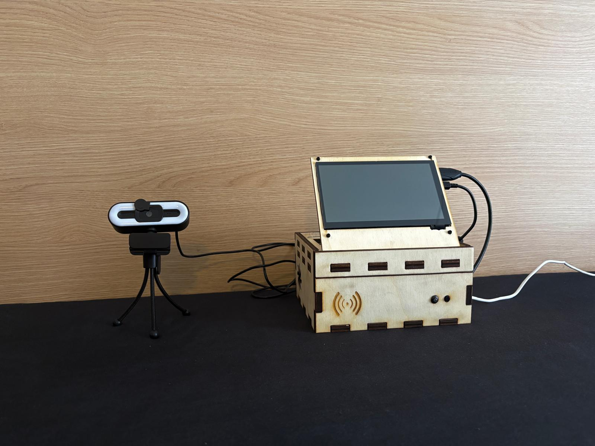

Kortrijk, Belgium
Michal Heleš
AI & Software Developer, currently studying Creative Technologies & AI at Howest University
I build with Python, machine learning, and embedded systems — turning raw data into pipelines, models, and things that run on real hardware. Looking for a student tech role around Kortrijk / Ghent, or remote.
About
I'm a hands-on developer with a foundation in Python, machine learning, and embedded systems. I'm currently deepening that at Howest University of Applied Sciences, studying Creative Technologies & AI — building real AI-powered applications that span from data pipelines to deployed hardware.
Alongside my studies I've spent years in fast-paced, hands-on work: festival production, customer-facing service, and office administration. It's where the reliability and clear communication behind my technical work actually comes from. I'm a confident user of AI tools, both as a developer and as a subject of study.
Experience
Skills
Development
Soft Skills
Extra
My Projects
Click through for the full description — architecture, tech stack, and links to source.

RefTrack
Basketball referee gesture recognition — a custom-trained YOLO model on a Raspberry Pi 5, deployed as a standalone device with a FastAPI + Gradio + PostgreSQL stack.
NBA Game Predictor
A leakage-safe ML pipeline that scrapes NBA stats, engineers rolling-form and Elo features, and predicts game outcomes with XGBoost + isotonic regression — automated daily via GitHub Actions.
Contact
Let's talk
Have a project in mind?
Open to student tech roles around Kortrijk / Ghent, or remote — and always happy to hear what you're working on.